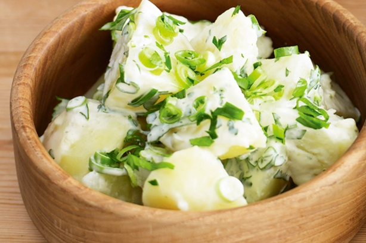

Ingredients:
-1.5kg lady christl potatoes, peeled, cubed
-4 green onions, thinly sliced
-1/4 cup chopped fresh flat-leaf parsley leaves
-6 gherkins, finely chopped
-1/2 cup whole-egg mayonnaise
-1/2 cup sour cream
-2 tablespoons cider vinegar
Method:
1. Cook potato in a large saucepan of boiling, salted water for 10 minutes or until tender. Drain. Cool for 15 minutes
2. Combine potato, onion, parsley and gherkin in a large bowl. Combine mayonnaise, sour cream, 1 tablespoon hot
water and vinegar in a jug. Add mayonnaise mixture to potato mixture. Toss to combine. Serve
Nutrition values:
Energy:
1685kJ |
Fat saturated:
7.40g |
Sodium:
207.00mg |
Fat Total:
25.70g |
Carbohydrate sugars:
g |
Carbohydrate Total:
33.90g |
Dietary Fibre:
4.30g |
Protein:
6.10g |
Cholesterol:
52.00mg |
|